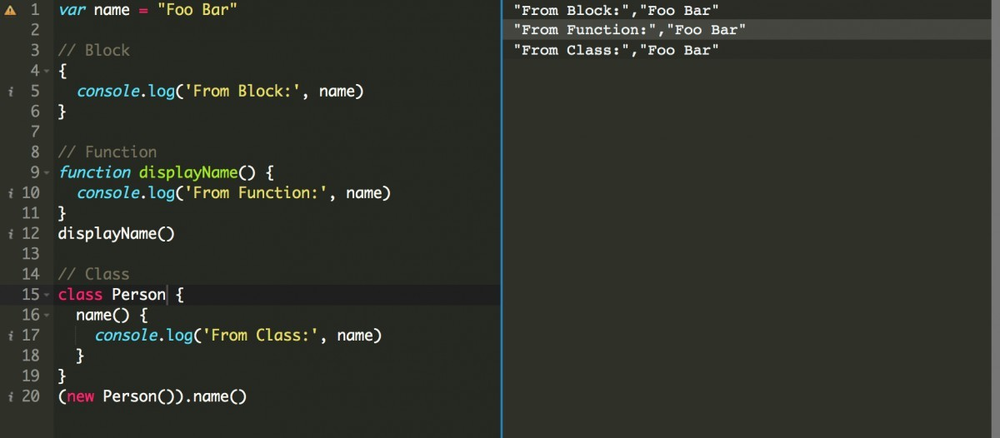

Scope, not only in JavaScript but in any programming language, is a crucial fundamental concept. As these fundamental concepts are closely tied to comprehending more complex design-oriented aspects of JavaScript. If you are a JavaScript developer and do not have a clear understanding of scopes, I urge you to take the time to read this article. It will help you make your code more readable, isolated, and maintainable.
Story time!
Imagine you are walking along a road. In this situation, a car would be a suitable means of transport. On the other hand, if you find yourself floating in space, a space rocket would be the appropriate choice to safely navigate through the vast emptiness. Naturally, a car wouldn't be suitable in space since it cannot fly. 🤔
If I were to inquire about the scope of the car and the space rocket, your answers might be similar to the following:
- The scope of a car is limited to the road.
- The scope of a space rocket extends to space.
Your answers appear to be correct and make perfect sense!
What is scope in JavaScript?
In the JavaScript world, we encounter variables that may have access or might not have access at all in certain parts of our code. This means we employ the concept of scope in our code to control the availability of a variable that can hold a function, object, or any value!
Different types of scope in JavaScript
In the early days of JavaScript, when Internet Explorer dominated, there were only two types of scope:
- Global Scope
- Functional Scope
However, modern JavaScript introduces a few more types of scope. Let's explore them with code examples.
Global Scope
Similar to most other programming languages, JavaScript also possesses a single global scope. When we declare a variable outside of any function, class, or block, it signifies that the variable belongs to the global scope.
To define a global variable, we can use the var keyword. However, it is essential to note that employing the global scope is not recommended. Whenever possible, it is advisable to avoid the use of global variables.
Example code:
var name = "Foo Bar"
// Block
{
console.log('From Block:', name)
}
// Function
function displayName() {
console.log('From Function:', name)
}
displayName()
// Class
class Person {
name() {
console.log('From Class:', name)
}
}
(new Person()).name()
Output:

Local Scope
Local scope refers to variables that we define within a specific part of the code and are accessible only from within that particular part. These variables are commonly referred to as local variables. In JavaScript, there are two types of local scope:
- Block Scope
- Function Scope
Block Scope
In JavaScript, a code block is denoted by curly braces {}. When you write code within these curly braces, you are creating a code block.
Within a code block, you have the option to define variables using the keywords provided in modern JavaScript, namely `let` and `const`. These variables will be accessible only within that specific block.
However, it is crucial to be cautious when intentionally writing block-scoped code. Avoid defining variables with the var keyword within the block, as doing so would make the variables accessible in the global scope.
Example Code:
{
const NAME = "Foo Bar"
let age = 18
console.log(NAME, age)
}
console.log(NAME, age)
In the given code, we have defined the variable "name" using the const keyword because it is not expected to be modified, and for the variable "age," we are using let since it might be updated each year.
The first console.log statement within the block will produce the output: [Output will depend on the actual code/logic provided].
Output:
However, the second console.log will throw an error:
"Uncaught ReferenceError: NAME is not defined."
This error occurs because these variables are only available within this block and have no existence outside the block. In other words, they are not accessible outside of the specific block in which they were defined.
Function Scope
When you define a variable within a function, that variable will be available only within that specific function. This scope is known as function scope.
Within function scope, you can define variables using the var, let, or const keywords. All three of these keywords are valid for declaring variables within functions.
Example Code:
function name () {
var fullName = "Foo Bar"
let firstName = "Foo"
const lastName = "Bar"
console.log(fullName, firstName, lastName)
}
name()
Output:
If you attempt to use console.log(fullName, firstName, lastName) outside of the function, it will result in an error:
"Error: Uncaught ReferenceError: fullName is not defined on line .."
This error occurs because the variables fullName, firstName, and lastName are only defined within the function block and do not exist outside of it.
If there are similar variables with the same names declared outside the function block, the variables declared within the function will not affect or override those outside variables. They will remain distinct entities.
Here is an example code:
var fullName = "Baz Pop"
let firstName = "Baz"
const lastName = "Pop"
function name () {
var fullName = "Foo Bar"
let firstName = "Foo"
const lastName = "Bar"
console.log(fullName, firstName, lastName)
}
name()
console.log(fullName, firstName, lastName)
Output:

Notice that, even though the variables have the same names in the global scope and the function scope, they can remain isolated from each other. However, you must exercise caution because if you remove the variable definitions from the function scope, they will reference and modify the variables from the global scope instead.
Lexical Scope
Lexical scope, also known as Static Scope, pertains to a group of nested functions where the child function has access to the variables defined in its parent scope.
One crucial point to note is that, within a lexically bound scope, the parent functions will not be able to access the values within their child functions.
Example code:
function fullName() {
const firstName = "Foo"
function printName() {
const lastName = "Bar"
console.log(firstName, lastName)
}
printName()
}
fullName()
Output:

In the provided code, there is a parent function called fullName() and its child function called printName(). It is essential to observe that the child function can access the value of the variable firstName defined within the scope of the parent function.
Utilising the understanding of scopes from the above example, you can implement public and private scope variables and functions in JavaScript.
Now, let's clarify the concepts of public and private scope:
In various other programming languages like Java, Python, or PHP, similar concepts of public scope and private scope exist. In JavaScript, these concepts can be achieved through closures and object-oriented patterns.
A public scope refers to variables or functions that can be accessed and utilised from outside the specific context they were defined in. On the other hand, a private scope denotes variables or functions that are accessible only within the specific context in which they were defined, and they cannot be directly accessed or modified from outside that context.
By using closures and object-oriented patterns in JavaScript, you can create public and private scope variables and functions to control the visibility and access of certain elements in your code.
Code example:
const User = function () {
let firstName
let lastName
const displayUserName = function () {
console.log(firstName, lastName)
}
const setName = function (first, last) {
firstName = first
lastName = last
displayUserName()
}
return {
setName
}
}
User().setName("Foo", "Bar")
In this context, the variables firstName and lastName, along with the displayUserName() function, are private. On the other hand, the setName() function is public. All these elements have access to the scope of their parent functions, meaning their outer functions' scope. As a result, if we only have access to the function call of "User," we cannot access or modify the values of firstName, lastName, and displayUserName properties. However, we can access and use the setName function as intended.
If you are wondering how the class implementation will look like then I can give you another code example that solves similar purpose:
class User {
constructor() {
let firstName;
let lastName;
this.displayUserName = function () {
console.log(firstName, lastName);
};
this.setName = function (first, last) {
firstName = first;
lastName = last;
this.displayUserName();
};
}
}
const user = new User();
user.setName("Foo", "Bar");
Feel free to follow me on Twitter @rakibtg, and I would love to hear your thoughts on this article.